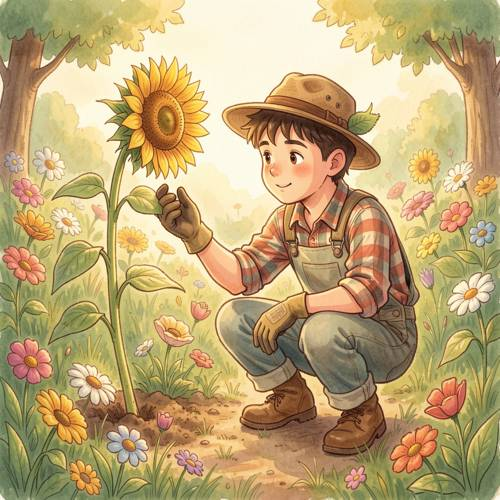
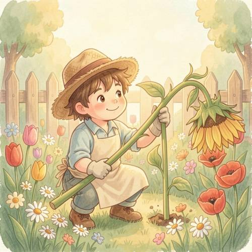
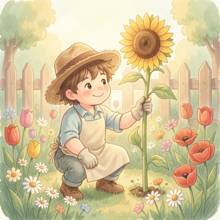

Action — Please draw a picture: a young gardener is squatting among the flowers
Please draw a picture: a young gardener is squatting among the flowers, gently holding up a sunflower that is about to fall with his gloved hand. The picture is in a warm and healing picture book style.

Direct — one call, no iteration

Continuum — Kimi K3 + FLUX.2-klein-9B
Judge — Direct
FAILAction - Hand (Character/Anthropomorphic) — The character wears brown gloves on both hands. His right hand is shown touching a leaf on the sunflower's stem. The hand is not depicted holding up the sunflower itself, and the sunflower is upright, not appearing to fall.
PASSRelationship - Composition — The central figure of a young gardener is surrounded by numerous flowers of various colors and types, such as daisies, which are in front of, next to, and behind him.
PASSAction - Full-body (Character/Anthropomorphic) — The character is shown in a full-body squatting position, with both knees bent and his body lowered to the ground, supported by his feet.
PASSStyle — The image is rendered with a soft, warm color palette, including yellows, greens, and browns. The style features gentle line work and a watercolor-like texture, with a cute character design, which is characteristic of a warm picture book illustration.
Judge — Continuum
PASSAction - Hand (Character/Anthropomorphic) — The character, a young gardener, is wearing light-colored gloves on both hands. He is holding the stem of a drooping sunflower with both gloved hands, seemingly to support it.
PASSRelationship - Composition — The gardener is located in a garden, surrounded by various flowers in the foreground and mid-ground, including daisies, tulips, and poppies.
PASSAction - Full-body (Character/Anthropomorphic) — The gardener is depicted in a squatting position, with his knees bent and his body low to the ground.
PASSStyle — The image is illustrated in a style with soft lines, a warm, pastel color palette, and gentle lighting, consistent with a warm and healing picture book style.
What the agent did
Thinking
The user wants a picture book style illustration. I'll use flux2-klein per benchmark policy. Let me generate.
Step 1 — `generate_image`
{
"model": "flux2-klein",
"prompt": "Warm and healing children's picture book illustration, soft watercolor and gouache style with gentle crayon textures. A young gardener boy with messy brown hair and a straw hat, wearing a light apron, is squatting among a lush flower bed filled with colorful blossoms (daisies, tulips, poppies). He is gently holding up a tall sunflower that is about to fall over, supporting its stem with one gloved hand, a kind caring smile on his face. Golden warm sunlight, soft pastel color palette, dreamy atmosphere, cozy garden scene with a wooden fence in the background, rounded soft shapes, wholesome and tender mood."
}
Result img_0

Thinking
This looks quite good! The boy is squatting among flowers, holding a sunflower with a gloved hand, warm picture book watercolor style, wooden fence, straw hat, apron. One small nitpick: the sunflower doesn't look like it's "about to fall" — it stands fairly straight. But it's gently leaning slightly. The gloved hand is holding the stem. Both hands appear gloved. The composition and style match well. I could try an edit to make the sunflower tilt slightly to emphasize "about to fall." Let me mark this as best first, then try a small edit.
Model
The image turned out nicely and matches the prompt well. Let me mark it and make a small refinement so the sunflower looks like it's actually tilting/about to fall.
Step 2 — `mark_best`
{
"image": "img_0",
"reason": "Warm picture-book watercolor style, boy squatting among flowers holding a sunflower with a gloved hand \u2014 matches prompt."
}
Step 3 — `edit_image`
{
"image": "img_0",
"model": "flux2-klein",
"prompt": "Make the sunflower stem lean and droop slightly to one side so the flower head tilts as if about to fall, while the boy's gloved hand gently props it up."
}
Result img_1
Thinking
The edit barely changed anything — the sunflower still stands mostly upright. Both images are essentially identical in quality. The original img_0 is already marked best and matches the prompt. The "about to fall" nuance is subtle; the current image shows him supporting the stem which reads fine. I could try one more edit with stronger wording, but per policy, don't chase marginal improvements. Actually let me try one stronger edit attempt — a drooping head. If it fails, keep img_0.
Model
The edit didn't change the sunflower's tilt much. Let me try once more with a clearer instruction, since the "about to fall" lean is a key detail.
Step 4 — `edit_image`
{
"image": "img_0",
"model": "flux2-klein",
"prompt": "Bend the sunflower's stem into a curve so the flower head droops over to the right at about 45 degrees, like it is about to topple, with the boy's gloved hand catching and supporting the bent stem."
}
Result img_2
Thinking
Now the sunflower clearly droops and the boy holds it up with both gloved hands. It actually looks like the stem may have snapped and he's holding a long bent stem — the flower head droops down to the right, which reads as "about to fall" well. The composition still works. However, the stem looks very long and bent at a big arc; the sunflower head is upside-down drooping. It does convey "about to fall" strongly and his gloved hands hold it up. But the head is now at the far right near poppies — slightly odd but still charming and matches "about to fall." Compare: img_0 is prettier compositionally, but the sunflower is upright. img_2 matches the "about to fall" narrative better. I think img_2 is closer to the prompt. One concern: the sunflower face is hidden (back of flower showing), and the head appears detached from the ground stem? There's a straight stem in the ground and the bent stem he's holding — looks like he's holding the broken sunflower. That's acceptable and even storybook-like. I'll mark img_2 as best. Actually, is it better? Prompt: "gently holding up a sunflower that is about to fall with his gloved hand." img_2 shows exactly that. The style remains warm and healing. I'll mark img_2.
Model
The sunflower now clearly droops as if about to fall, with the boy catching it with both gloved hands — this matches the prompt's narrative much better while keeping the warm picture-book style. I'll mark this as the best result.
Step 5 — `mark_best`
{
"image": "img_2",
"reason": "Sunflower visibly drooping/about to fall while the boy gently props it up with gloved hands; retains the warm healing picture-book watercolor style."
}
Model
The picture is complete! 🌻 Here's the final illustration: a young gardener in a straw hat and apron, squatting among a flower bed of daisies, tulips, and poppies, gently catching a drooping sunflower with his gloved hands before it can topple over. The warm watercolor-and-crayon textures, soft golden light, and cozy wooden fence in the background give it that gentle, healing picture-book feel — like a quiet moment of kindness in a garden.